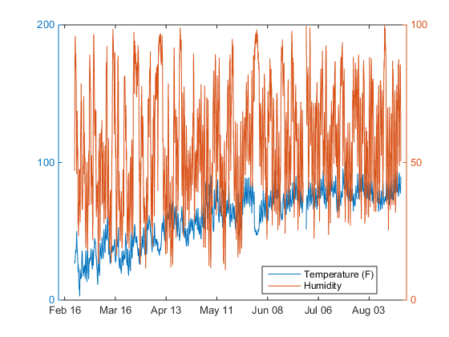
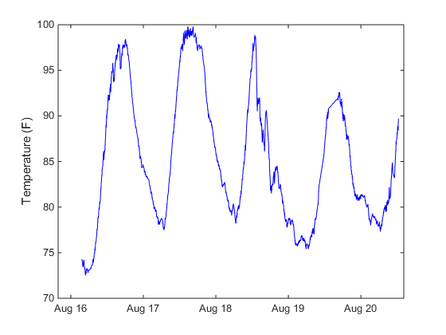
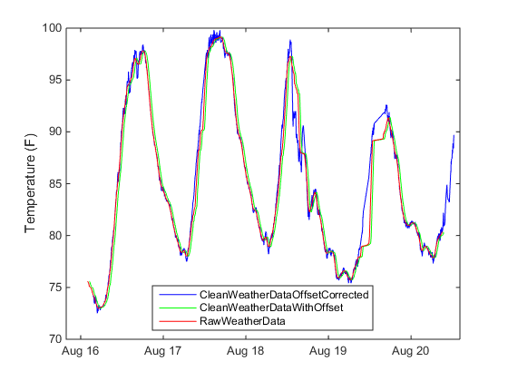
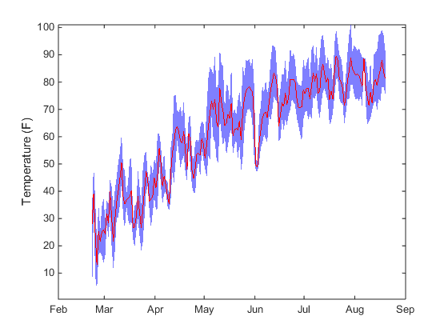
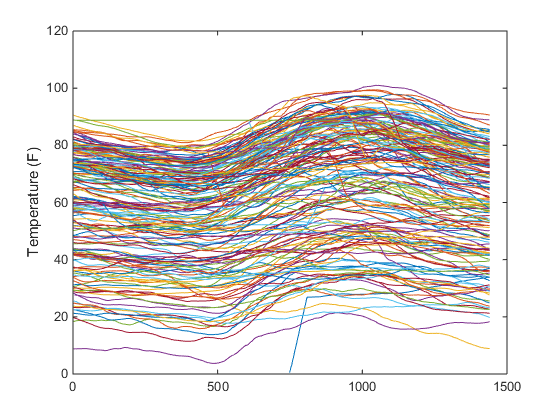
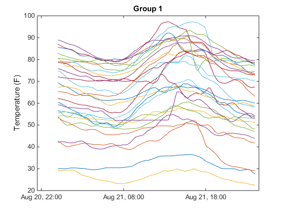
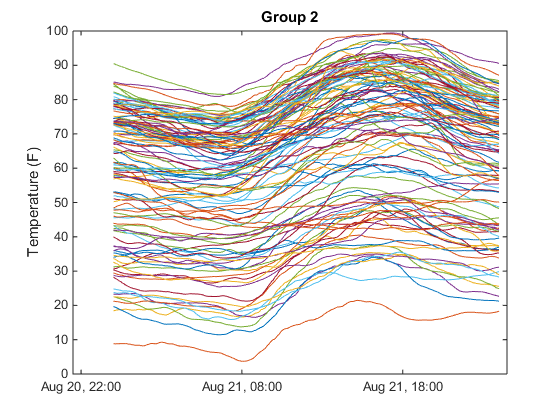
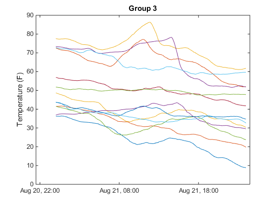
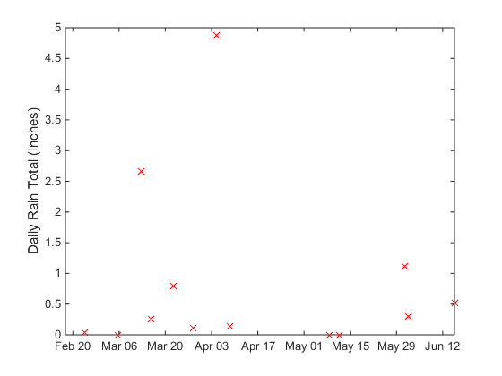

MathWorks Weather Station
Last year, tired of the fickle New-England weather we went ahead and installed our own weather monitoring system at the MathWorks. We hooked up the weather station to ThingSpeak.com to measure and store:
- Wind Direction
- Wind Speed
- % Humidity
- Temperature (F)
- RainFall
- Pressure
- Light Intensity
With this data, we computed summary statistics to understand the variations of the entities being measured over short periods of time. We also discovered bad data - missing values and outliers and discussed techniques we used to handle bad data. After cleaning the data, we created custom visualizations using MATLAB graphics to understand the data better. Follow this link to read the previous article.
It has been about a year since. Data has been continuously collected for the entire period as well. With this large amount of data and the new features on ThingSpeak, we would like to take our analysis and visualization a step further.
Let us start by reading all the data measured for the last 6 months. Data is being collected once every minute, therefore, there will be about 259200 data points. This is an approximate calculation based on the assumption that data is being collected without any missing periods and each month has 30 days. First, define the date range that we need to read data for. endDate is defined to be today and startDate is selected to be 6 months ago from today.
endDate = datetime('now', 'TimeZone', 'local'); startDate = endDate - calmonths(6);
With 60 measurements being made per minute, the MathWorks weather channel receives 1440 values every day for each entity being measured. We need to note here that ThingSpeak enforces a maximum limit of 8000 points per request. Therefore to read all the data for the last 6 months, we need to read data in chunks. For our case, this chunk is 5 days (i.e., about 7200 points). You could also do lesser number of days per call to ThingSpeak, depending on your algorithm requirements. With this, let us go ahead and define a datetime vector, starting on startDate and ending with endDate with a spacing of 5 days:
dateVector = startDate:caldays(5):endDate;
Now, with the dateVector defined, let us read the weather data from ThingSpeak.com. To read data from the MathWorks weather channel on ThingSpeak.com, we use the thingSpeakRead function:
weatherData = []; for dayCount = 1:length(dateVector)-1 dateRange = [dateVector(dayCount), dateVector(dayCount+1)]; channelData = thingSpeakRead(12397, 'Fields', [1:7], 'DateRange', dateRange, 'outputFormat', 'table'); weatherData = [weatherData; channelData]; end
After reading in the data, let us visualize the data to check if we read all the data we wanted. Instead of attempting to visualize all of data at once, let us just look at the Temperature and relative Humidity measurements. For this we use the plotyy function. The plotyy function creates a 2-D line plot with y-axes on both left and right side, thereby allowing us to visualize the individual dynamic ranges clearly.
figure; plotyy(weatherData.Timestamps, weatherData.TemperatureF, weatherData.Timestamps, weatherData.Humidity) legend('Temperature (F)', 'Humidity', 'location', 'best');
From the plot above, you can see that the requested 6 months of data has been read from ThingSpeak. Further, the general temperature trend across winter and into summer is also visible. However, there is no such trend visible for humidity. With the data for the desired duration now in MATLAB, let us go ahead and analyze it. The first step in our data analysis workflow is to check for missing values. There are several causes for data containing missing values - for eg: the weather monitoring system lost power, sensor did not send a value. To obtain unbiased analysis results however, we need to remove these missing values. Let us check if there are any missing values in the data. The ismissing function checks the data to identify any missing values, represented by NaN.
sum(ismissing(weatherData))
ans =
Columns 1 through 6
0 15398 0 34 2236 0
Columns 7 through 8
8 0
The sum of the output of ismissing function indicates the total number of rows with missing data in each column. If there are missing values in the data, then we will remove it by using the listwise deletion technique. Listwise deletion technique deletes the entire row of data even if one of the columns in the row has a missing value:
% Find the index of the missing data elements TF = ismissing(weatherData); % Select only the rows that do not have any missingValues cleanWeatherData = weatherData(~any(TF,2),:);
Let us visualize the cleaned data. Instead of plotting the entire 6 months of data, let us plot the last 5000 points to help visualize data at a day level.
figure; plot(cleanWeatherData.Timestamps(end-5000:end), cleanWeatherData.TemperatureF(end-5000:end), 'b'); ylabel('Temperature (F)') hold all;
In the figure above, it is evident that there is a lot of local variations in the measured data. For our analysis, we cannot use data as is since we are interested in daily metrics. Local variations at the minute level can lead to inaccuracies at the day level metrics calculation. To average the local variations, let us apply an hourly smoothing filter. Since we have 60 samples per hour, to apply an hourly smoothing filter, set the smoothing filter order to 60. Let us first apply this to Temperature measurements.
filterOrder = 60; cleanWeatherData.TemperatureF = filter((1/filterOrder)*ones(1, filterOrder), 1, cleanWeatherData.TemperatureF);
Let us visualize the same chunk (last 5000 points) of smoothed data to see the effects of smoothing the data. Since the filter has a linear phase, a filter delay of half the filterOrder is introduced into the smoothed data, i.e., the smoothed data is offset by filterOrder/2 (60/2 = 30) number of samples. Further, until the filter has processed as many samples as the filter order, the smoothed data is in transient. Therefore, let us ignore the transient data, and visualize the smoothed data with the offset and with the offset corrected:
plot(cleanWeatherData.Timestamps(end-(filterOrder+5000):end-filterOrder), cleanWeatherData.TemperatureF(end-(filterOrder+5000):end-filterOrder), 'g') hold on; plot(cleanWeatherData.Timestamps(end-(filterOrder+5000):end-filterOrder)-minutes(ceil(filterOrder/2)), cleanWeatherData.TemperatureF(end-(filterOrder+5000):end-filterOrder), 'r') legend('CleanWeatherDataOffsetCorrected', 'CleanWeatherDataWithOffset', 'RawWeatherData', 'location', 'best')
In the figure above, you can see that the local variations in the temperature have been averaged to get a smoother curve. If you would like a smoother curve or a different averaging window, you can change the fitler order to meet your data smoothing requirement. Let us apply the same filter to the rest of the measurements: - Wind Direction, Wind Speed, Humidity, RainFall, and Pressure.
cleanWeatherData.WindDirectionNorth0Degree = filter(1/filterOrder*ones(1, filterOrder), 1, cleanWeatherData.WindDirectionNorth0Degrees); cleanWeatherData.WindSpeedmph = filter(1/filterOrder*ones(1, filterOrder), 1, cleanWeatherData.WindSpeedmph); cleanWeatherData.Humidity = filter(1/filterOrder*ones(1, filterOrder), 1, cleanWeatherData.Humidity); cleanWeatherData.RainInchesminute = filter(1/filterOrder*ones(1, filterOrder), 1, cleanWeatherData.RainInchesminute); cleanWeatherData.PressureHg = filter(1/filterOrder*ones(1, filterOrder), 1, cleanWeatherData.PressureHg);
Now that the data has been cleaned of missing values and local measurement variations have been smoothed, let us calculate daily metrics such as - daily min, max, mean - for the entire 6 months period. Since the cleaned data is non-uniformly sampled, we need to group the data by days prior to calculating the daily metrics. For this, we use the custom changeGranularity function in MATLAB that we created. You can get access to this function by clicking on the button at the end of the article.
% Calculate the day metrics [dailyMean, dailyTimeStamp] = changeGranularity(cleanWeatherData.Timestamps, cleanWeatherData.TemperatureF, 'day', 'mean'); [dailyMin] = changeGranularity(cleanWeatherData.Timestamps, cleanWeatherData.TemperatureF, 'day', 'min'); [dailyMax] = changeGranularity(cleanWeatherData.Timestamps, cleanWeatherData.TemperatureF, 'day', 'max'); dailyTimeStamp(isnan(dailyMin)) = []; dailyMin(isnan(dailyMin)) = []; dailyMax(isnan(dailyMax)) = []; dailyMean(isnan(dailyMean)) = [];
Having calculated the daily max, min and average of temperature, we can visualize the data on a band plot to understand the range of temperature variations across each day over the last 6 months.
figure xData = [dailyTimeStamp', fliplr(dailyTimeStamp')]; yData = [dailyMin, fliplr(dailyMax)]; fill(datenum(xData), yData, 'b', 'LineStyle', 'none', 'FaceAlpha', 0.5); hold all; plot3(datenum(dailyTimeStamp), dailyMean, ones(length(dailyMean),1)*0.1, 'r') ylabel('Temperature (F)'); axis tight datetick
A very interesting observation can be made from this graph. The width of the blue band around the red line is larger in summer than in winter. This implies that the daily range of temperature variations is much larger starting spring and summer than in winter. This is one of the reasons that New England weather is very pleasant and bearable in the evenings even in the peak of summer. After calculating the day level maximum, minimum and average of the temperature data, you can store it in a channel on ThingSpeak. If you do not already have a channel on Thingspeak.com, follow the instructions here to create a new channel. To write the day level temperature values to your channel enter the channel ID, and the write API Key below:
writeChID = []; writeKey = ''; thingSpeakWrite(writeChID, [dailyMin', dailyMean', dailyMax'], 'Timestamp', dailyTimeStamp, 'writeKey', writeKey);
Next, let us look into daily temperature variations. In general, the expectation is that the temperature starts to increase with sunrise - all the way to around 4 'o clock in the afternoon and then slowly starts to decrease. While there are several other factors like wind patterns and pressure changes that influence temperature variation, we should see this behavior on a majority of days.
Due to missing values, and other sensor imperfections, data is not uniformly sampled. Therefore, let us resample the temperature data by interpolation, so that there are equal number of temperature data points for each day. For the interpolation we have assumed that each measurement day starts at midnight, and ends prior to midnight next day with a uniform spacing of a minute. The interp function requires timestamps to be strictly monotonic. Therefore, we will also be deleting any points where the timestamp is not strictly increasing.
% Index the different days in the weather data dayGroupIndx = dayGroups(cleanWeatherData.Timestamps); for numDays = 1:numel(dailyTimeStamp) dayVal = cleanWeatherData.TemperatureF(dayGroupIndx==numDays); dayTime = cleanWeatherData.Timestamps(dayGroupIndx==numDays); % Delete non-unique timestamp indxNonStrictMonotonic = find(diff(dayTime) == 0); dayTime(indxNonStrictMonotonic) = []; dayVal(indxNonStrictMonotonic) = []; interTime = datetime(dayTime(1).Year, dayTime(1).Month, dayTime(1).Day, 00, 00, 00): minutes(1):datetime(dayTime(1).Year, dayTime(1).Month, dayTime(1).Day, 23, 59, 59); interpVals(numDays, :) = interp1(datenum(dayTime), dayVal, datenum(interTime.')); end figure plot(interpVals'); ylabel('Temperature (F)');
While the majority number of days follow the expected pattern, we also see several days where there are different types of temperature variations across the day. It looks like there are a few groups that we can assign these to. Since we do not know the groups before hand, we can use an unsupervised clustering technique called kmeans. Kmeans clustering is an iterative, data-partitioning algorithm that assigns n observations to exactly one of k clusters defined by centroids, where k is chosen before the algorithm starts. While there are several different metrics available to calculate which cluster an observation belongs to, we have chosen correlation to be our metric. Correlation works the best for our case, since temperature variation through the day follows a similar pattern on most days. This is true immaterial of the starting temperature or the range of temperature variation in the day. The kmeans function in MATLAB performs k-means clustering and returns an n-by-1 vector idx containing cluster indices of each observation:
idx = kmeans(interpVals(:, 2:end), 3, 'Distance', 'correlation');
We have chosen the number of clusters k to be 3, to check if there are as many groups in the temperature variation pattern. You can change this to a different value to see if additional groups are found. Let us plot data in each of the 3 groups, to see the difference in behavior in each group. Since the data is collected over 6 months, to visualize all the days in an overlapping manner, we create a synthetic timestamp vector:
dateNow = datetime('now'); dateVec = datetime(dateNow.Year, ... dateNow.Month, dateNow.Day, 00, 00, 00)... : minutes(1):datetime(dateNow.Year, dateNow.Month,... dateNow.Day, 23, 59, 59); for idxInd = 1:3 figure; idxGroup.(sprintf('group%d', idxInd)) = find(idx == idxInd); plot(dateVec, interpVals(idx == idxInd, :)'); ylabel('Temperature (F)'); title(sprintf('Group %d', idxInd)); count(idxInd) = sum(idx == idxInd); display(count(idxInd), sprintf('Number of days in cluster #%d', idxInd)); end
Number of days in cluster #1 =
28
Number of days in cluster #2 =
122
Number of days in cluster #3 =
13
   As expected, the group with the most number of days follows the temperature variation pattern we expected with the temperature increasing through to afternoon and then cooling down. The days that do not follow this pattern are the most interesting days. Therefore, we explored the group with the least number of days further.
[minVal, minInd] = min(count);
datestr(dailyTimeStamp(idxGroup.(sprintf('group%d', minInd))))
ans = 23-Feb-2015 12:27:52 05-Mar-2015 12:27:52 12-Mar-2015 13:27:52 15-Mar-2015 13:27:52 22-Mar-2015 13:27:52 28-Mar-2015 13:27:52 04-Apr-2015 13:27:52 08-Apr-2015 13:27:52 08-May-2015 13:27:52 11-May-2015 13:27:52 31-May-2015 13:27:52 01-Jun-2015 13:27:52 15-Jun-2015 13:27:52
Since these days had a temperature pattern most different from the expected pattern, let us check if these days had any rain
[dailyRainSum, dailyTimeStamp] = changeGranularity(cleanWeatherData.Timestamps, cleanWeatherData.RainInchesminute, 'day', 'sum'); plot(dailyTimeStamp(idxGroup.(sprintf('group%d', minInd))), dailyRainSum(idxGroup.(sprintf('group%d', minInd))), 'rx') ylabel('Daily Rain Total (inches)')
Interestingly, in both winter and summer months, rain in the New England area leads to a change in temperature patterns. The temperature decreases through the day except for a few spikes.
In addition to storing your raw sensor measurements, ThingSpeak.com provides a platform to run MATLAB code to analyze and visualize your data. Therefore, following the insights obtained from the analysis of historical weather data over the last six months, we wanted to set up some of the analysis routines on ThingSpeak.com to obtain live notifications when weather events occur and also create intuitive visualizations using MATLAB.
Let us start with the dew point calculation that was explained in the previous article. We have copied the MATLAB code from the article and running the dew point calculation algorithm on ThingSpeak.com every five minutes. Here is view of the channel with the dew point being updated every five minutes:
To set up your own dew point calculation on ThingSpeak, follow instructions in this article. Further, in this article you can learn how to set up ThingSpeak to send out a tweet every time the dewpoint exceeds a certain predefined value.
In addition to the dew point calculation, we were also interested in the wind velocity over the last three hours. This gives us some insight into the temperature patterns for the day. During summer, if the wind is blowing into Natick from the East, then the sea breeze will help keep the temperature cooler, whereas if the wind is blowing from inland then it usually is a warm day. We can visualize this on ThingSpeak by creating a compass plot:
To help get a daily summary of the weather in Natick, we also created a mashup visualization. For this we take the raw weather measurements from channel 12397 and use MATLAB to create the custom visualization.
Note that to use MATLAB on ThingSpeak, you do not need to have a licensed copy of MATLAB. However, if you do not have access to MATLAB on your desktop and would like to get a trial copy, please click here. To purchase a copy of MATLAB please click here. If you are a student, then click here to purchase MATLAB for student use.